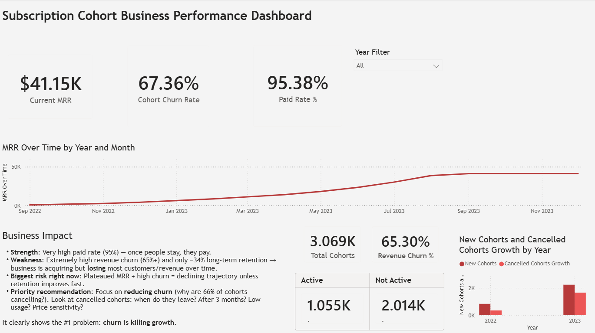
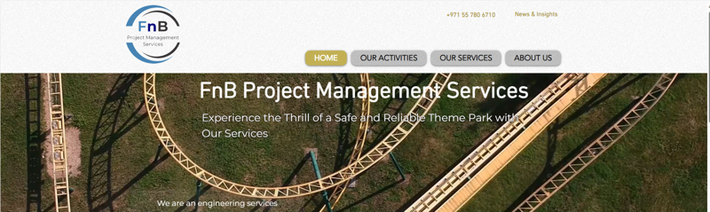

About Me
Experienced Operations Supervisor with over 10 years leading teams and optimizing processes in hospitality, healthcare, and entertainment. Recently completed Google Data Analytics Professional Certificate — now integrating SQL, Power BI, Tableau, and data insights into operations for better decision-making and performance tracking.
Open to Operations Supervision, Administrative Leadership, or Assistant Manager roles where strong coordination meets growing analytics capabilities. Long-term goal: advance into research and data science.
Key Skills & Tools
Soft Skills
Work Experience
Operations Supervisor
FnB Project Management Services – Dubai
Jul 2023 – Aug 2025
- Coordinated schedules, resources, and meetings for smooth operations
- Managed documentation, inventory, and project plans
- Used data tools + analytics for performance tracking and website SEO/optimization
- Led multiple concurrent projects with strong prioritization
Operations Team Leader
IMG Worlds of Adventure – Dubai
Dec 2020 – Mar 2023
- Trained and certified 100+ team members; enforced safety standards
- Managed staffing forecasts, daily allocations, and guest issue resolution
- Conducted job induction sessions and provided continuous performance feedback
- Served as Rides Duty Manager, resolving guest issues with professionalism
Operations Coordinator
IMG Worlds of Adventure – Dubai
Mar 2017 – Dec 2020
- Monitored 100+ CCTV feeds to ensure safety and incident management
- Created and sustained radio inventory tracking system for operational readiness
- Collected and analyzed throughput, downtime, and defect data for reports
Customer Care Executive
Life Line Hospital – Abu Dhabi
Apr 2014 – Nov 2016
- Handled patient registration and billing aligned with insurance coverage
- Recovered patient trust through strong issue resolution and service recovery
- Helped maintain revenue consistency for 3 top-performing specialists
Process Executive
GENPACT Services – Manila
Mar 2011 – Dec 2013
- Delivered first-call resolution with optimized call handling times
- Audited and evaluated call quality, training staff on identified gaps
Front Desk Supervisor
Princess Cruises – Los Angeles, CA
Jan 2008 – Jan 2011
- Managed front desk operations including embarkation/disembarkation processes
- Oversaw team rosters and guest service escalations as Night Duty Manager
- Liaised with port agents and customs for compliance and documentation
Selected Projects
NutriTrack – Personal Nutrition Tracker
Privacy-first PWA • Local data storage • Real-time macro tracking • Built with vanilla JS
NutriTrack is a high-performance Progressive Web App (PWA) designed to streamline nutritional tracking through a "privacy-first" architecture. Developed as a custom solution to support a rigorous fitness regimen, the application eliminates the common latency of third-party food databases by utilizing a locally indexed library of favorites and user-defined entries.
Interactive Nutrition Tracker • Built with HTML5, CSS3, JavaScript ES6+ • LocalStorage API
About this Project
Tools: HTML5, CSS3 (Tailwind CSS), JavaScript (ES6+), and the LocalStorage API
Role: Lead Developer and Data Architect
Goal: To build a zero-latency nutrition tracker that functions offline and prioritizes local data privacy.
Objectives:
- Eliminate reliance on slow external APIs by building a custom local food database.
- Create a seamless "Search → Click → Add" workflow for multi-meal tracking (Breakfast, Lunch, Snack, Dinner).
- Implement real-time macro calculation and historical data persistence without a back-end server.
Implementation:
- Data Persistence: Leveraged localStorage for instant data retrieval and Day Streak maintenance.
- Automation: Built a dynamic search engine that indexes local favorites and custom user libraries.
- Visual Analytics: Integrated a progress reporting system to track caloric and protein trends.
Key Metrics Displayed:
- Personal Success: Successfully supported a weight loss journey from 96 kg to 77.3 kg.
- System Performance: Reduced search latency from over 5 seconds (external API) to under 10ms (local indexing).
- Consistency: Maintained a 100-day fitness and nutrition streak.
How to Use
- Type a food item in the search bar.
- Click the result to automatically inject it into the active meal section.
- Use the "Save Day" button to archive data and "Your Report" to view progress charts.
SaaS Subscription Cohort Analysis – Churn & Revenue Retention Study
Power BI Dashboard • Cohort Analysis • DAX Measures • Business Intelligence
This Power BI project uses cohort analysis to reveal how a high 95% paid conversion rate is being offset by significant customer and revenue churn. I transformed these complex subscription trends into actionable insights, providing a strategic roadmap to pivot from aggressive acquisition to sustainable, retention-led growth.

Click image to expand view
About this Project
Tools: Power BI Desktop, DAX, Data Modeling, Cohort Analysis Techniques
Role: Data Analyst (End-to-End Dashboard Design, Data Modeling & Business Interpretation)
Goal: To analyze subscription performance using cohort analysis and evaluate the impact of customer churn on revenue growth and retention.
Objectives:
- Calculate Customer Churn Rate and Revenue Churn Rate
- Analyze Monthly Recurring Revenue (MRR) trends over time
- Compare Active vs Cancelled subscribers
- Identify growth patterns in new cohorts
- Translate churn behavior into business risk insights
Implementation:
Utilized a cleaned dataset from Kaggle (Jobs and Salaries in Data Science) covering data from 2020–2023.
- Built a structured data model linking subscription data with a master calendar table
- Added business interpretation section to translate metrics into actionable insights
-
Developed DAX measures for:
- Customer Churn Rate
- Revenue Churn Rate
- Current MRR
- Paid Rate %
- Active Subscriptions at Start of Month
- Designed an executive-style dashboard with KPI cards, trend analysis, and cohort growth comparison
Key Metrics Displayed:
- Current MRR: $41.15K
- Customer Churn Rate: 67.36%
- Revenue Churn Rate: 65.30%
- Paid Rate: 95.38%
- Total Cohorts: 3.069K
- Active vs Not Active Subscribers
- New vs Cancelled Cohort Growth by Year
Recommendations:
- Despite strong paid conversion (95%), high customer and revenue churn (~65–67%) significantly limits long-term growth.
- Priority should be placed on improving retention by analyzing cancellation timing, customer lifetime behavior, and potential value gaps in service delivery.
- Reducing churn will have a stronger impact on sustainable MRR growth than increasing acquisition alone.
Cyclistic Bike Share Analysis
Tableau Dashboard • Excel Analysis • Member vs Casual Rider Behavior • Google Capstone
Capstone Project for Google Data Analytics Professional
Certificate
Cleaned and analyzed 12 months of ride data using Excel + Tableau.
Built dashboard showing member vs casual usage patterns and
recommended strategies to increase annual memberships.

Interactive Tableau dashboard • Explore ride patterns, seasonal trends, and user behavior
About this Project
Tools: Tableau, Excel
Role: Sole Contributor
Goal: To uncover behavioral patterns between annual and casual riders of Cyclistic bikes and provide data-driven recommendations that support marketing strategies, improve service utilization, and encourage the conversion of casual users into annual members.
Objectives:
- Compare usage trends (frequency, duration, and ride timing) between annual and casual riders
- Recommend actions to increase annual memberships and optimize bike resource allocation
Implementation:
This project used a 12-month dataset of Cyclistic bike riders (2023, Chicago), provided by the Google Data Analytics Capstone Project.
- Cleaned and analyzed the dataset using MS Excel
- Built an interactive dashboard in Tableau to visualize user behavior, ride durations, and popular bike usage
- Created key insights to support marketing and operations decisions
Key Metrics Displayed:
- Total rides in 2023
- Average ride duration by user type
- Total annual ride hours
- Ride counts for the most-used bike type
Recommendations:
- Improve ride efficiency by analyzing long ride durations
- Evaluate bike preference and replicate features in future procurement
- Scale operations in response to rising ride volume
- Encourage shorter rides with pricing strategies
- Rebalance bike availability based on underutilization insights
Data Science Jobs & Salaries Analysis
SQL • Excel • Tableau • Global Salary Benchmarking • Workforce Planning
SQL + Excel + Tableau analysis of global salaries across 70+ countries. Created interactive dashboard for benchmarking and workforce planning.
Interactive Tableau dashboard • Explore salary ranges, role comparisons, and industry insights
About this Project
Tools: SQL, Tableau, Excel
Role: Data Analyst
Goal: To analyze global job trends and salary benchmarks in the field of data science across multiple countries, providing insights to support career planning, compensation strategy, and workforce analysis.
Objectives:
- Understand the growth trajectory of data science jobs globally
- Identify roles with the most promising compensation opportunities
Implementation:
Utilized a cleaned dataset from Kaggle (Jobs and Salaries in Data Science) covering data from 2020–2023.
- Used SQL for data retrieval, filtering, and aggregation
- Applied Excel for additional metric review and formatting
- Built an interactive Tableau dashboard to visualize job counts, salary distributions, and hiring patterns across regions and roles
Key Metrics Displayed:
- Total number of jobs and job availability
- Average, minimum, and maximum salaries (USD)
- Country-wise and role-based data segmentation
Recommendations:
- Job Market Trends: A rising job count and high job availability suggests a strong, growing demand for data professionals globally.
- Salary Benchmarking: Salary ranges help set compensation expectations and can guide wage negotiation and policy.
- Career Planning: Significant gaps between average and max salaries point to high earning potential in specific roles or markets.
- Recruitment Strategies: High job availability with stagnant job creation may reflect turnover or skills mismatch.
- Economic Indicators: Salary and job trends can signal broader economic patterns across the data sector.
FnB Project Management Website
Web Design • SEO Optimization • Wix Platform • Digital Strategy
Developed the official company website using Wix as the main platform, with custom HTML/CSS enhancements and full SEO optimization.

Operational Infrastructure & Web Presence
Operations Management • Digital Strategy • UAE Theme Park Maintenance
Click image to view full size
About this Project
Tools: Wix, HTML, Google Search Console
Role: Web Designer & SEO Coordinator
Goal: To design and launch the official website of FnB Project Management Services, and implement SEO strategies to improve the company's visibility and indexing on Google.
Project Summary:
In this project, I collaborated closely with the client to understand their brand identity, service offerings, and functional requirements. Using Wix, I designed and developed a responsive, user-friendly website aligned with the company's image and operations.
Beyond visual design, I focused on Search Engine Optimization (SEO)—optimizing structure, metadata, and keyword placement to increase discoverability. The site was then registered and indexed using Google Search Console, successfully enhancing the company's digital footprint.
The project resulted in a fully functional online presence that met all technical, aesthetic, and strategic goals—supporting both brand credibility and market visibility.
Education & Certifications
Professional Certificate in Advanced Data Analytics (Ongoing) – Google / Coursera
Professional Certificate in Data Analytics – Google / Coursera (Sep 2023 – Feb 2024)
Bachelor's in Computer Science – AMA Computer University, Manila (1998–2001)
Key Certifications: Google Data Analytics, Lean Six Sigma Green Belt, Power BI (Pragmatic Works), Project Management
Contact Me
Email: solace5710@gmail.com
LinkedIn: linkedin.com/in/ramirmendigo567